CS280A · Project 2
Fun with Filters and Frequencies!
From local image derivatives to hybrid perception and multiscale blending.
1.1 · Convolution from Scratch
Implementing convolution with four loops and with two loops, then comparing both against SciPy.
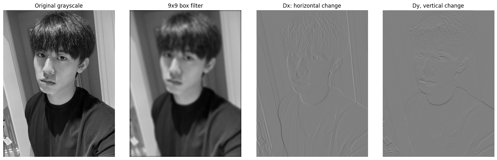
Correctness. Both convolution implementations flip the kernel and use zero padding with same output size. Testing asymmetric, box, and finite difference kernels against SciPy produced a maximum absolute error of 1.78e-15, consistent with floating-point rounding.
Runtime. Median timings over three runs on a 128 × 128 image with a 9 × 9 box filter:
| Method | Runtime |
| Four loops | 272.18 ms |
| Two loops | 27.88 ms |
| SciPy | 1.37 ms |
The two-loop version was faster because NumPy replaces the inner Python loops. SciPy was fastest.
Boundaries. Zero padding preserves output size but can darken borders during averaging and create artificial boundary responses during differentiation. Padding for even-sized kernels follows SciPy's same alignment.
Image results. The 9 × 9 box filter softened hair, facial details, and clothing texture. Dx emphasized near-vertical edges, such as the door frame, while Dy emphasized horizontal portions of the lips and neckline. Both derivative images use the same symmetric display range, with middle gray representing zero.
1.2 · Finite Differences and Edges
I convolved the grayscale image with horizontal and vertical finite-difference filters, then combined the responses into a gradient magnitude and thresholded it.
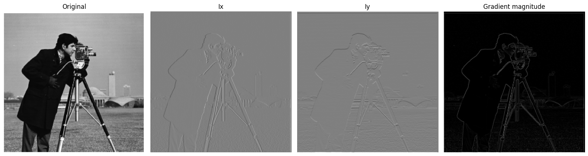
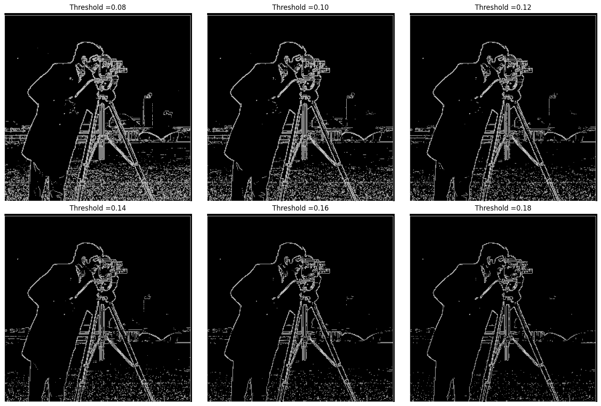
Threshold selection. I compared thresholds from 0.08 to 0.18 and selected 0.14. Lower thresholds retained dense grass texture responses,while higher thresholds removed additional weak edges and camera details.At 0.14, the main contours of the person, camera, and tripod remained visible with less background clutter.
1.3 · Derivative of Gaussian
Gaussian smoothing suppresses fine texture before differentiation. Combining the Gaussian and derivative kernels gives an equivalent interior response with one image convolution.
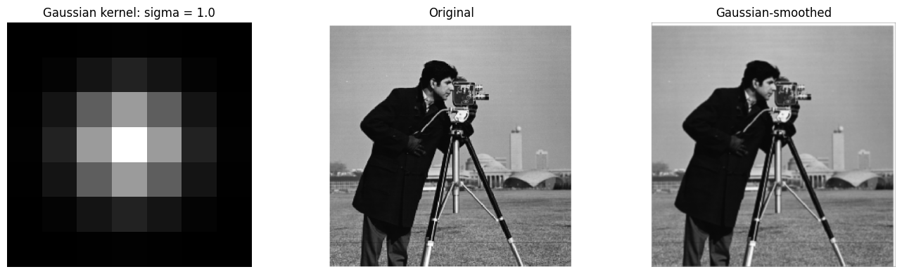
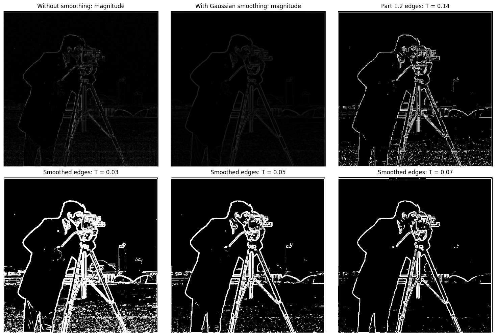
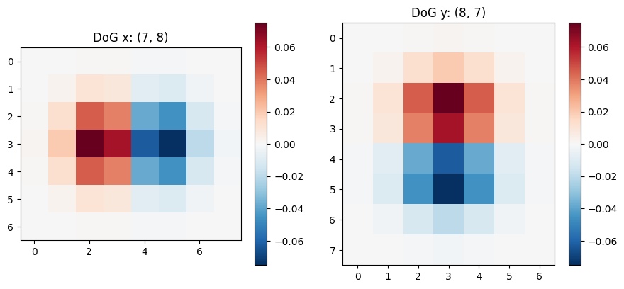
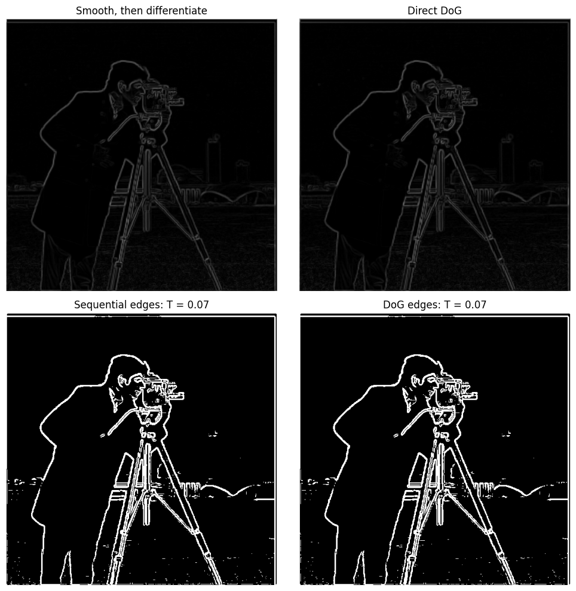
A 7 × 7 Gaussian filter with sigma = 1.0 reduced fine texture responses but broadened edges. I selected a threshold of 0.07 to retain the main contours.
Direct DoG filtering matched smoothing followed by differentiation in the interior, with errors below 8e-16. The full-image error of 0.3005 resulted from intermediate cropping and zero padding at the boundaries.
Gradient Orientation · CS280A
I estimate orientation without built-in angle functions, matching each gradient to candidate unit directions.
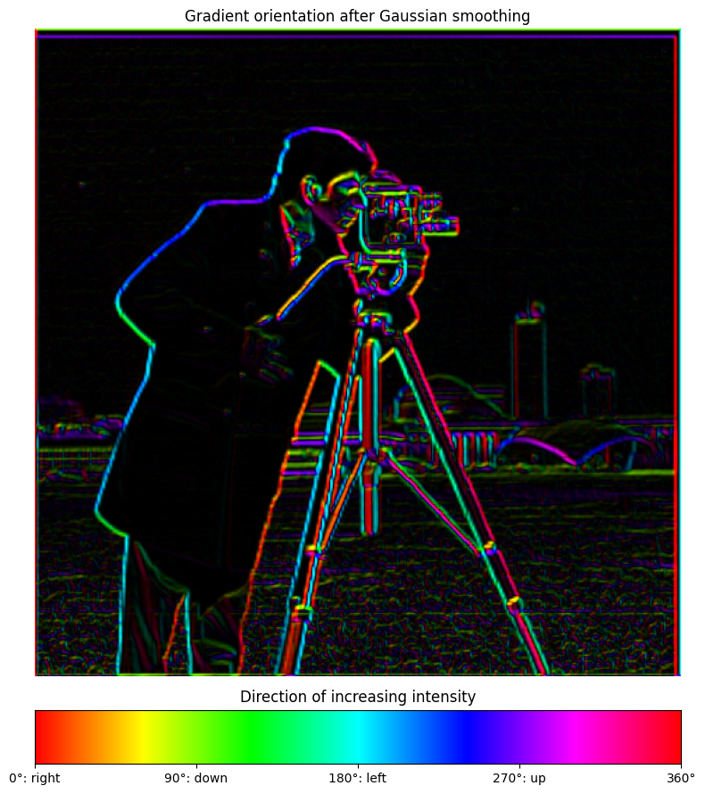
I estimated orientations by selecting the maximum dot product between each gradient and 360 candidate unit directions, without using inverse trigonometric functions. The angular quantization error is at most 0.5°.
Hue represents direction and brightness represents gradient magnitude. Image coordinates increase downward, so 90° points down. Zero gradients are displayed as black. The colored image border results from zero padding.
2.2 · Hybrid Images
Low frequencies determine the appearance from farther away; high frequencies carry the close-up details.
Derek + Nutmeg: alignment and filtering
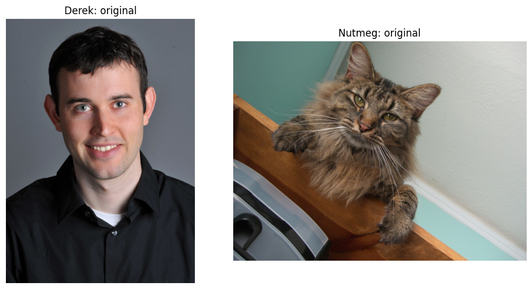
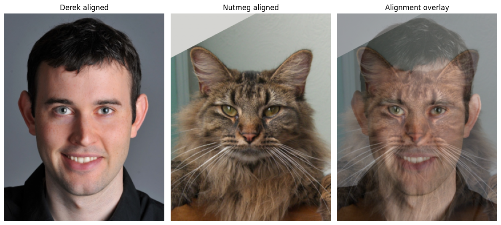
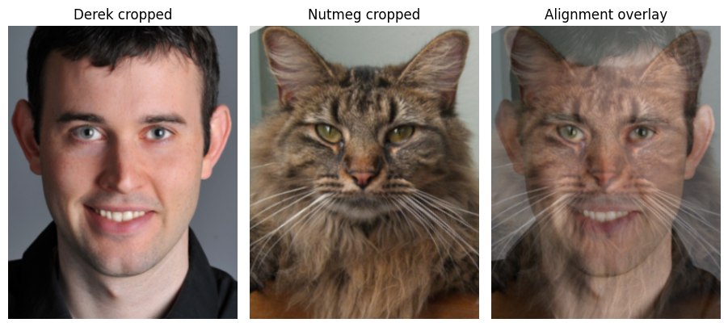
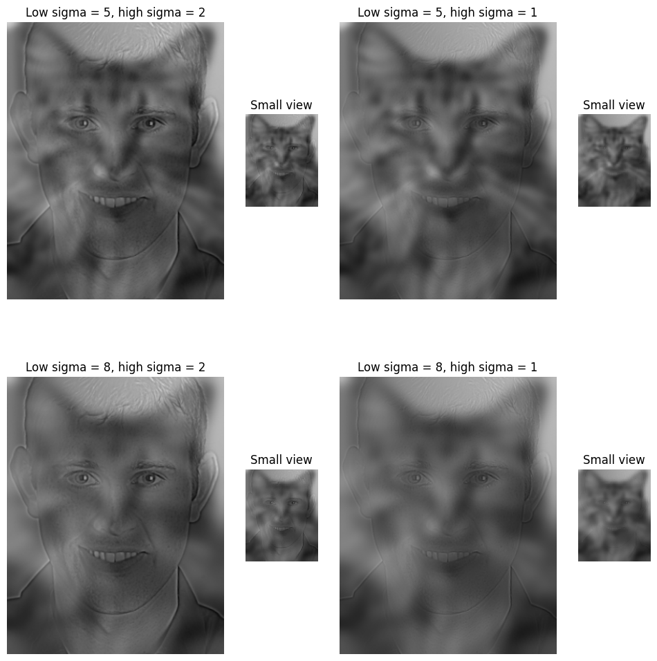
I aligned the eye centers and combined Nutmeg's low frequencies with Derek's high frequencies. Among four parameter pairs, I selected sigma_low = 5 and sigma_high = 1: Derek's features remain visible at larger size, while Nutmeg becomes more prominent when viewed smaller. The transition is imperfect, and a padding boundary remains visible.
Filter scale. Gaussian filters have a gradual frequency roll-off rather than a sharp cutoff. Increasing sigma lowers the low-pass bandwidth. For the high-pass residual, increasing sigma retains a wider range of frequencies. The selected sigma values are measured in pixels of the aligned, cropped images; resizing the inputs would require retuning them.
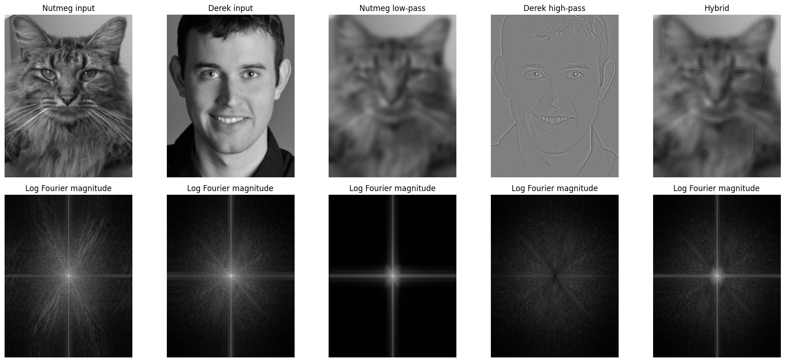
Color comparison · CS280A
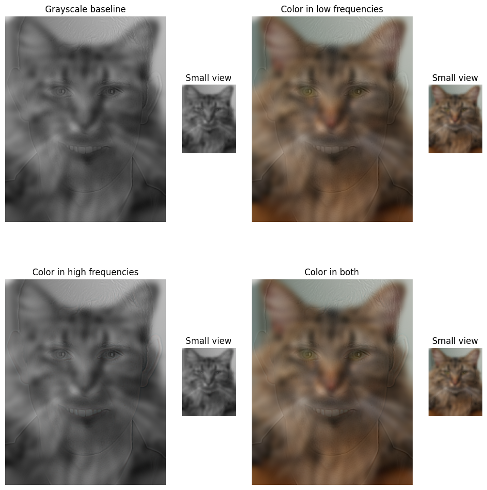
Color comparison. I preferred color in the low-frequency component.Nutmeg's fur colors strengthen the small-view interpretation, while Derek's grayscale high-frequency details remain visible at larger size. High-frequency color adds little visible benefit, and coloring both components produces a similar result to low-frequency color alone.
Custom Hybrid 1 — Expression Change
Sources: 2009 portrait, Pete Souza, CC BY 3.0; 2012 portrait, Pete Souza / White House, U.S. public domain. Images are aligned, cropped, and filtered here.


I align both eye pairs to the same horizontal positions. The comparison below tests which frequency assignment better separates the neutral and smiling expressions. Parameters are candidates, not a final selection.
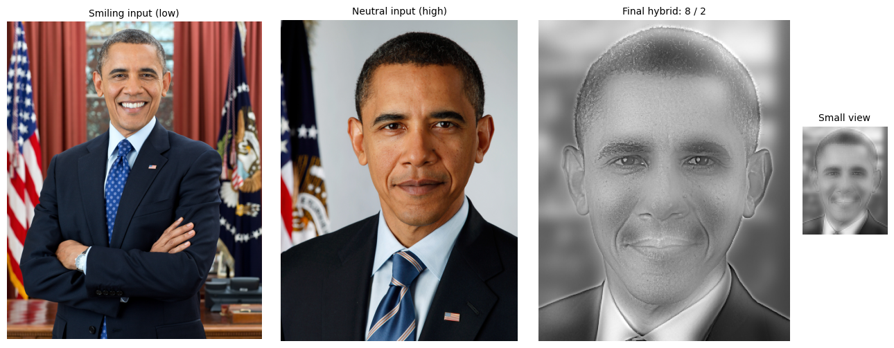
Expression result. I selected smiling low frequencies (sigma = 8) and neutral high frequencies (sigma = 2). The neutral mouth contour is more visible in the large view, while the smile dominates at smaller size. Mouth ghosting remains because the expressions have different geometry.
Custom Hybrid 2 — Cat and Tiger
Sources: Cat, Fir0002/Flagstaffotos, CC BY-NC 3.0; Tiger, Steve Evans, CC BY 2.0. Images are resized, warped, cropped, and filtered for this noncommercial coursework.


Two-eye alignment left the noses at different heights. I therefore used three manually selected landmarks (both eyes and the nose) and an affine transform. This reduces double-nose artifacts but changes facial proportions. Reflected boundary padding is used when sampling outside the inputs.
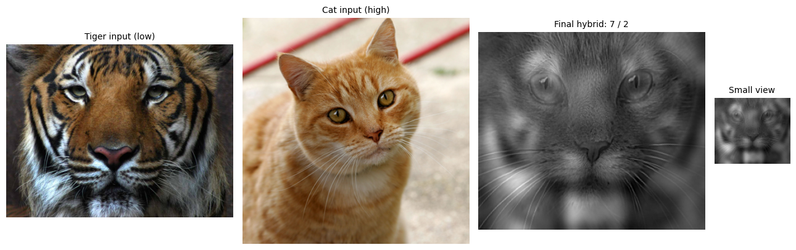
Animal result. I selected tiger low frequencies (sigma = 7) and cat high frequencies (sigma = 2). Fine cat fur and eye details are visible at larger size, while the tiger's broad stripe pattern dominates the small view. The separation is imperfect because both animals share similar facial features.
2.3 · Gaussian and Laplacian Stacks
Build five full-resolution levels for the apple and orange images. Level 0 is the original; successive levels blur the previous level with sigma values of 1, 2, 4, and 8 pixels (incremental, not cumulative).
Each Laplacian band is the difference between adjacent Gaussian levels. The final level retains the low-frequency residual, so summing all five levels reconstructs the original. Signed detail values are preserved; gray-centered scaling is used only for visualization.
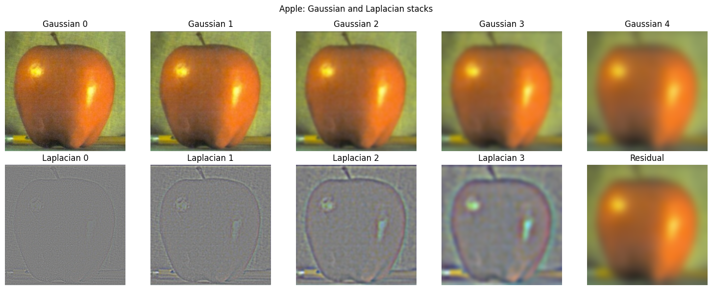
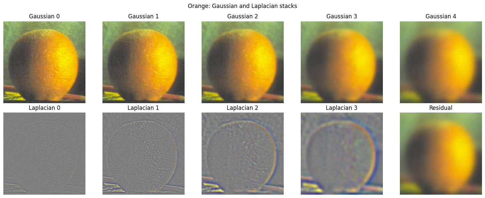
- I built five full-resolution levels for each image, using successive Gaussian blurs with sigma values of 1, 2, 4, and 8 pixels. Every level remains 300 × 300 pixels.
- As smoothing increases, fine surface texture disappears while the fruit shape, broad shading, and color remain. The Laplacian bands isolate progressively coarser details, from fine texture to wider boundary and lighting changes.
- The final residual preserves low-frequency color and brightness. Summing all bands, including this residual, reconstructs the inputs with maximum errors of 4.163e-17 (apple) and 2.776e-17 (orange).
- Gray-centered scaling is only used to display signed detail bands. The original values are preserved for reconstruction and blending. Unlike a pyramid, this stack performs no downsampling.
2.4 · Multiresolution Blending
Apple and Orange
At each level, combine the image Laplacian bands using complementary Gaussian mask weights, then sum all levels including the residual. White in the mask selects the apple; black selects the orange. All operations preserve signed floating-point values until display.
Compare incremental sigma schedules of (1, 2, 4, 8) and (3, 6, 12, 24). The wider schedule spreads low-frequency color transitions over a larger region. Before blending, the orange is uniformly scaled by 0.9547 and translated to approximately match the apple at the top and bottom of the central seam. Reflected padding fills the image boundary; the original images and Part 2.3 stacks are preserved.
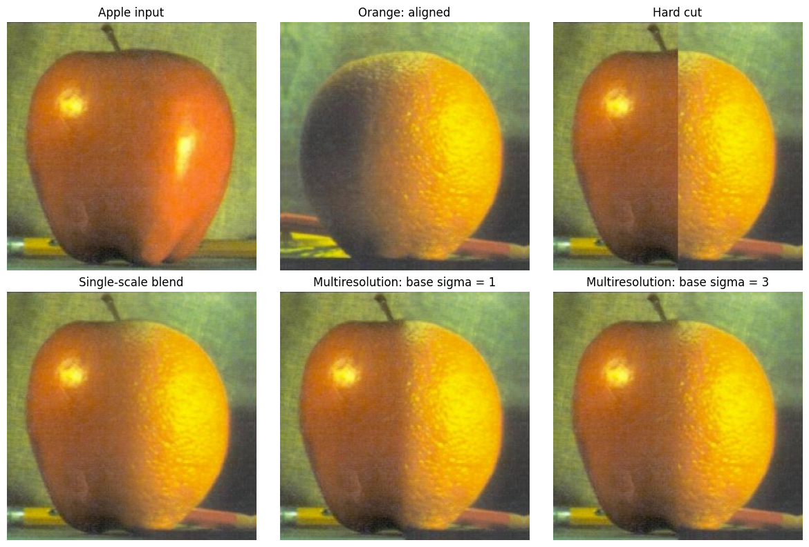
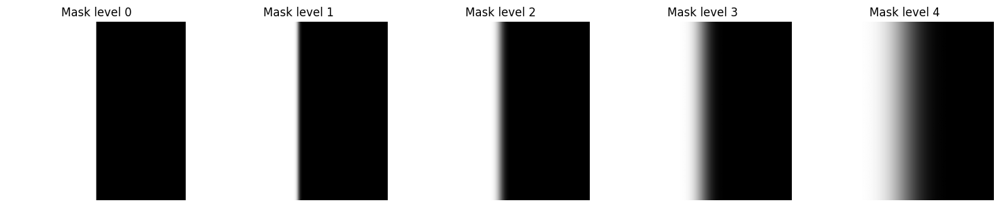
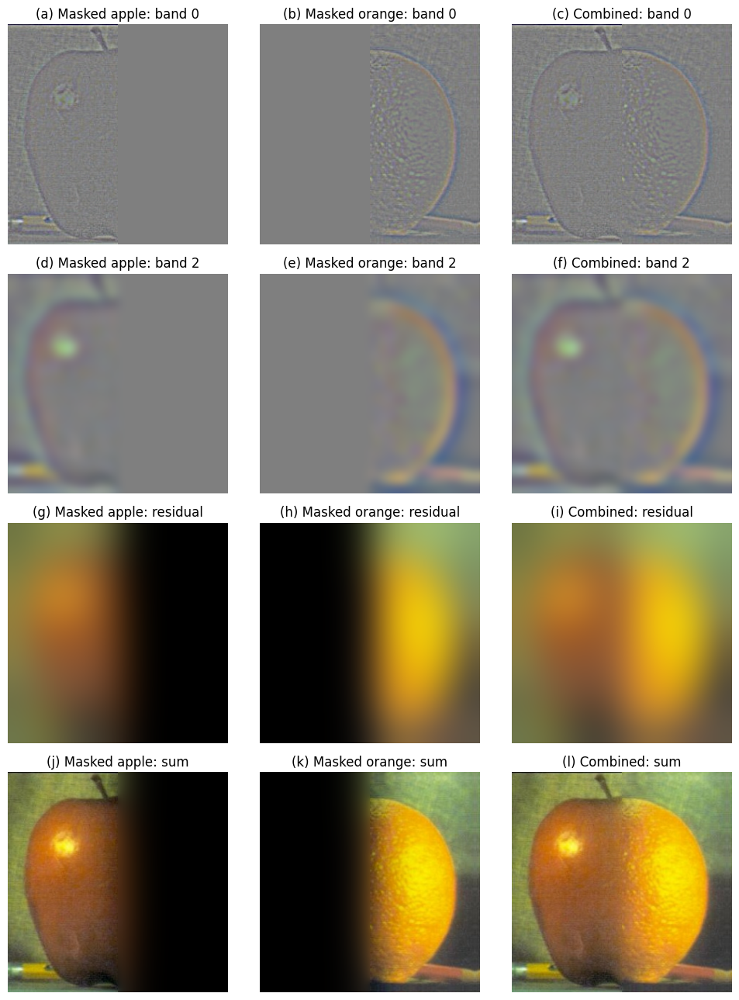
The hard cut produces an abrupt brightness and color transition. Gaussian mask weights spread the transition across scales, while the Laplacian bands retain surface detail. Increasing the base sigma from 1 to 3 broadens the low-frequency transition; it does not align the fruit contours. A small uniform scale and translation of the orange reduce the top and bottom contour mismatch at the seam. The two fruit shapes and backgrounds still differ, so alignment is approximate.
The color result preserves the apple's reddish tones and the orange's yellow tones. The twelve-panel view shows masked contributions at two detail scales, the residual, and their reconstructed sums. Detail panels share a gray-centered display scale; the residual and sums use the original intensity scale. Constant-mask checks verify that selecting either input reconstructs it to floating-point precision.
Custom Blend 1: Moon over Mountains
Place a resized moon above a cropped night landscape and use a circular mask, rather than a straight seam. This is an intentionally enlarged moon in a composite, not a documentary photograph.
Sources: Moon — Luc Viatour / Lucnix.be, CC BY-SA 3.0; landscape — U.S. Forest Service, public domain. Changes: cropping, resizing, positioning, and multiresolution blending. The resulting moon composite is shared under CC BY-SA 3.0.

.jpg){kind=link}
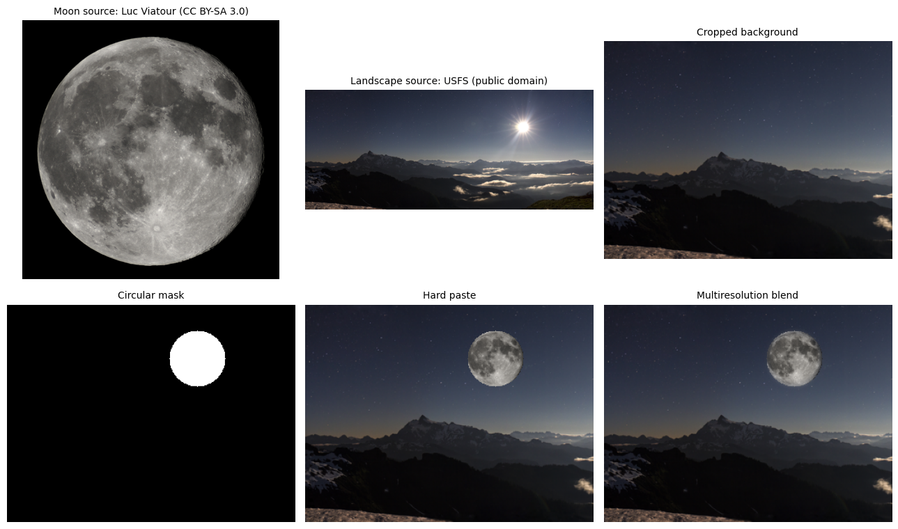
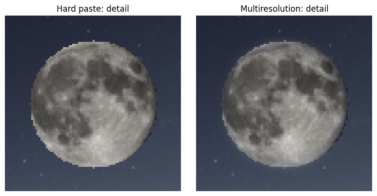
The landscape is cropped to exclude its existing moon. A 70-pixel lunar disk is placed in the open sky, and a circular mask selects it. Four levels use incremental sigma values of 0.75, 1.5, and 3 pixels. The foreground is extended with the target background outside the disk to avoid a black rectangular halo.
The enlarged views show a softer rim after blending, while the main lunar texture remains visible. A faint halo and some edge softness remain; excessive smoothing can produce a faded rim. The enlarged moon and differences in illumination remain deliberate limitations of the composite.
Custom Blend 2: Cat Face in a Tiger Portrait
Reuse the eye-and-nose alignment from Part 2.2, but perform spatial blending rather than hybrid frequency assignment. An elliptical mask selects the cat's eyes and muzzle; the surrounding tiger remains visible. The affine alignment changes facial proportions, and reflected image borders are synthetic padding.
Sources: Cat — Fir0002/Flagstaffotos, CC BY-NC 3.0; Tiger — Steve Evans, CC BY 2.0. Changes: alignment, masking, and blending. This composite is for noncommercial educational use.
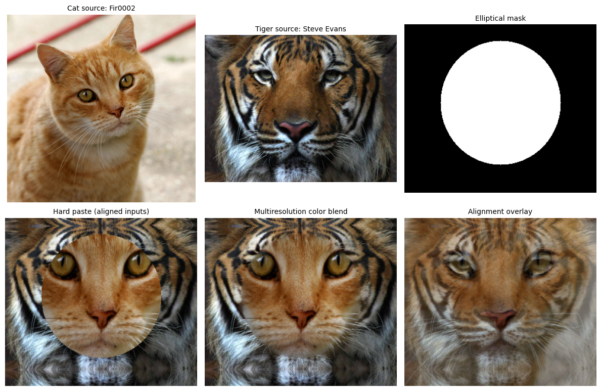
The elliptical mask transfers the cat's central facial features into the tiger portrait. Compared with the hard paste, the visible elliptical boundary is softened by multiresolution blending, while the cat's eyes and fur texture remain clear. Fur color and brightness change more gradually across the mask boundary. Alignment of the eyes and nose is necessary before blending; the filter cannot correct mismatched anatomy. The composite remains stylized because the species have different muzzle shapes, fur patterns, and lighting.
Both custom blends use color. Color preserves the scene's blue sky in the moon example and the tiger's orange fur in this example, but color and illumination differences can also reveal the pasted region.
What I Learned
The most important lesson from these experiments is that image detail exists at multiple spatial scales. The same Gaussian filtering operation supports edge detection, sharpening, hybrid images, and multiresolution blending, depending on how its low-frequency output and high-frequency residual are used.
Reconstruction checks helped distinguish implementation errors from visual limitations: Laplacian bands reconstruct their inputs to floating-point precision, yet a blend can still look unnatural when shapes or illumination differ. Alignment, boundary handling, mask placement, and filter scale all affect the final appearance.
The hybrid images also show that technically correct filtering does not guarantee a strong perceptual transition. Parameter comparisons and both large and small views are needed to judge the result.